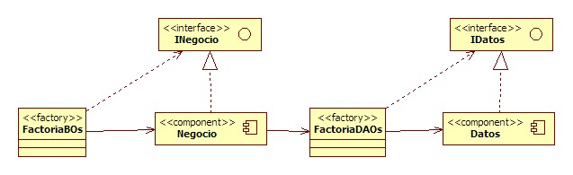

Proyecto Web
Introducción
El objetivo principal de las sesiones del proyecto web es refactorizar la aplicación de la biblioteca para dotarla de una calidad semejante a la de un proyecto empresarial real. Esto se traduce en un subconjunto de actividades:
- Crear un esquema de navegación apropiado
- Crear un interfaz de usuario amigable
- Aplicar una nomenclatura adecuada a todo el proyecto
- Uso extensivo de Struts, mediante sus taglibs, gestión de errores, validaciones, etc...
- Mejorar la calidad del código implementado
- Ampliar la batería de pruebas del sistema
Navegación
El flujo de navegación de la aplicación se detalla en el siguiente diagrama:

Cada una de las siguientes secciones, analizará y resolverá algunas partes de la aplicación, partiendo de la funcionalidad, interfaz de usuario y calidad del código. El resto de funcionalidades, quedarán como ejercicios.
Refactorizando el Login
Vamos a empezar por la puerta de entrada de la aplicación. Nuestro departamento de diseño gráfico nos ha entregado la siguiente hoja de estilo (la colocaremos en WebContent/css/style.css) y un conjunto de imágenes (que colocaremos en la carpeta WebContent/imágenes). Además, nos anexan los siguientes pantallazos con la apariencia de la aplicación:
- Login
- Web del Bibliotecario
Página de login
Esta página es la puerta de entrada a la aplicación. La página ya maquetada y con los taglibs de struts la colocaremos en WebContent/index.jsp
Al pulsar a entrar, la página cede el control al ActionMapping /accionLogin, mapeado con el Action es.ua.jtech.proyint.presentacion.acciones.loginlogout.AccionLogin
AccionLogin.java
La apariencia previa a la refactorización del Action es la siguiente:
public class AccionLogin extends Action {
private static Log logger = LogFactory.getLog(AccionLogin.class.getName());
@Override
public ActionForward execute(ActionMapping mapping, ActionForm form,
HttpServletRequest request, HttpServletResponse res)
throws Exception {
String login = request.getParameter("login");
String password = request.getParameter("password");
HttpSession sesion = request.getSession();
FactoriaDAOs fd = FactoriaDAOs.getInstance();
IUsuarioDAO iu = fd.getUsuarioDAO();
try {
UsuarioTO usuario = iu.selectUsuario(login, password);
if (usuario != null) {
sesion.setAttribute("usuario", usuario);
return mapping.findForward("OK");
// doForward(request, response, "/jsp/menu.jsp");
} else {
request.setAttribute("error", "El login y/o password no son correctos");
return mapping.findForward("error");
// doForward(request, response, "/index.jsp");
}
} catch (Exception e) {
logger.error("Login - " + request.getParameter("login") + " - Error haciendo login");
request.setAttribute("error", "Error al hacer login");
return mapping.findForward("error");
}
}
}
Vamos a cambiar:
- La lectura de parámetros de la request, por el uso de ActionForms, de modo que evitemos errores de tipografía.
- El uso de la variable error en la request, por la gestión de Struts de los errores mediante los ActionErrors.
- La lógica de control no esta en este Action, sino que la ha cedido a la vista (en menu.jsp) donde mediante diferentes sentencias condicionales muestra las 3 subaplicaciones de la biblioteca (administración, bibliotecario y socio).
- No es recomendable la aparición de más de una sentencia return dentro de un método, por lo tanto, vamos a unificar los posibles retornos en una variable, la cual devolveremos al final.
- El uso de cadenas por tokens unificados en un clase Tokens
- El mensaje de log no debe indicar la clase en la que se encuentra, ya que eso ya lo realiza el propio framework de log4j
El resultado es el siguiente:
public ActionForward execute(ActionMapping mapping, ActionForm form,
HttpServletRequest request, HttpServletResponse res)
throws Exception {
ActionMessages errors = new ActionMessages();
HttpSession sesion = request.getSession(true);
String forward = "";
LoginForm aForm = (LoginForm) form;
FactoriaDAOs fd = FactoriaDAOs.getInstance();
IUsuarioDAO iu = fd.getUsuarioDAO();
try {
UsuarioTO usuario = iu.selectUsuario(aForm.getLogin(), aForm
.getPassword());
if (usuario != null) {
logger.debug("Entra el usuario " + usuario);
// TODO Crear un objeto contenedor para la sesion
sesion.setAttribute(Tokens.SES_USUARIO, usuario);
// Comprobamos a que página le cedemos el control
if ((TipoUsuario.administrador).equals(usuario.getTipo())) {
forward = Tokens.FOR_ADMIN;
} else if ((TipoUsuario.bibliotecario)
.equals(usuario.getTipo())) {
forward = Tokens.FOR_BIBLIO;
} else {
forward = Tokens.FOR_SOCIO;
}
} else {
errors.add(ActionMessages.GLOBAL_MESSAGE, new ActionMessage(
Tokens.ERROR_KEY_LOGIN_NO_EXISTE));
}
} catch (DAOException e) {
logger.error("Error haciendo login con " + aForm.getLogin());
errors.add(ActionMessages.GLOBAL_MESSAGE, new ActionMessage(
Tokens.ERROR_KEY_LOGIN_KO));
}
ActionForward af = null;
if (errors.size() > 0) {
this.saveErrors(request, errors);
af = mapping.getInputForward();
} else {
af = mapping.findForward(forward);
}
return af;
}
Tokens.java
La clase de Tokens la definimos como una interfaz para que no se pueda instanciar, y que nos permite definir atributos (que al estar en un interfaz, automáticamente se convierten en atributos finales y estáticos).
public interface Tokens {
// Sesion
String SES_USUARIO = "usuario";
// Request
String REQ_LOGIN = "login";
String REQ_PASSWORD = "password";
// Response
String RES_USUARIOS = "usuarios";
String RES_LIBROS = "libros";
// Errores
String ERROR_KEY_LOGIN_NO_EXISTE = "error.login.noExiste";
String ERROR_KEY_LOGIN_KO = "error.login.ko";
String ERROR_KEY_PERMISOS_ADMIN = "error.usuario.permisosAdmin";
String ERROR_KEY_FALTA_LOGIN = "error.usuario.faltaLogin";
// .....
}
struts-config.xml
Tal como hemos comentado, toda la lógica de control estaba en el archivo de menú. Además, estábamos gestionando los errores mediante una variable en la request.
<action path="/accionLogin" type="es.ua.jtech.proyint.presentacion.acciones.loginlogout.AccionLogin">
<forward name="OK" path="/jsp/menu.jsp"/>
<forward name="error" path="/index.jsp"/>
</action>
De este modo, la lógica de control reside en el controlador, la gestión de errores la implementa Struts, de modo que si se produce un error le redirigimos a la página de entrada al action, definido por el atributo input del ActionMapping.
<action path="/accionLogin"
type="es.ua.jtech.proyint.presentacion.acciones.loginlogout.AccionLogin"
name="loginForm" scope="request" input="/index.jsp">
<forward name="admin" path="/accionListarUsuarios.do" />
<forward name="biblio" path="/jsp/biblio/index.jsp" />
<forward name="socio" path="/jsp/socio/index.jsp" />
</action>
menu.jsp -> /jsp/biblio/index.jsp
El archivo anterior contenía la siguiente lógica en la vista:
<h1>Menú principal</h1>
<c:if test="${empty sessionScope.usuario}">
<jsp:forward page="/index.jsp"/>
</c:if>
<c:if test="${sessionScope.usuario.tipo=='administrador'}">
....
<!-- Web del Administrador -->
.....
</c:if>
<c:if test="${sessionScope.usuario.tipo=='bibliotecario'}">
....
<!-- Web del Bibliotecario -->
.....
</c:if>
<c:if test="${sessionScope.usuario.tipo=='profesor' || sessionScope.usuario.tipo=='socio'}">
....
<!-- Web del Socio -->
.....
</c:if>
Y ahora vamos a tener 3 páginas de entrada a la aplicación, las cuales comparten la misma estructura de página. El esquema general de cada página será la siguiente (este caso particular es la página WebContent/jsp/biblio/index.jsp):
<%@ page contentType="text/html; charset=ISO-8859-1" pageEncoding="ISO-8859-1"%>
<%@ taglib uri="http://struts.apache.org/tags-html" prefix="html" %>
<!DOCTYPE html PUBLIC "-//W3C//DTD HTML 4.01 Transitional//EN" "http://www.w3.org/TR/html4/loose.dtd">
<html>
<head>
<meta http-equiv="Content-Type" content="text/html; charset=ISO-8859-1">
<title>Biblioteca jTech - Bibliotecario</title>
<link rel="stylesheet" type="text/css" href="css/style.css" title="800px style" media="screen,projection" />
</head>
<body>
<div id="wrap">
<%@include file="/jsp/cabecera.jspf" %>
<%@include file="/jsp/biblio/menu.jspf" %>
<div id="content">
<h2>Bienvenido !!! </h2>
</div>
<%@include file="/jsp/pie.jspf" %>
</div>
</body>
</html>
Web del Administrador
El administrador del sistema va a ser el encargado de gestionar los usuarios, de modo que al entrar a su web, le debe aparecer un listado de todos los usuarios, dándole la posibilidad de crear un nuevo usuario, o de modificar/borrar uno de los usuarios existentes.
Listado de Usuarios
A continuación se muestra un pantallazo de la apariencia del listado, donde podemos observar que para cada usuario, podemos editar sus datos o bien eliminarlo (mediante los iconos correspondientes):
Solución I: Paginación (por ejemplo, 20 usuarios por pantalla) y Ordenar (permitir clickar sobre los nombres de las columnas y ordenar el listado por dicho campo).
Solución II: Crear un buscador que permita obtener usuarios que cumplan ciertos requisitos (expresión regular con el login, estado del usuario, etc...)
Este tipo de listados, siempre van acompañados de un buscador para filtrar los resultados, posibilitando la ordenación de los resultados mediante la acción de clickar sobre las columnas, y de una leyenda de colores que visualmente aclare los diferentes tipos de registros (por ejemplo, los usuarios activos en blanco, los morosos en rojo, los de baja en gris claro, etc...)
AccionListarUsuarios.java
public ActionForward execute(ActionMapping mapping, ActionForm form,
HttpServletRequest request, HttpServletResponse response) throws Exception {
if(!compruebaPermisos(request, TipoUsuario.administrador)) {
request.setAttribute("error", "Se necesita ser administrador para obtener el listado de usuarios");
return mapping.findForward("noAutorizado");
} else {
FactoriaDAOs fd = FactoriaDAOs.getInstance();
IUsuarioDAO iu = fd.getUsuarioDAO();
List<UsuarioTO> lista = null;
try
{
lista = iu.getAllUsuarios();
if (lista != null)
{
request.setAttribute("lista", lista);
logger.info("Usuarios - listar - Listado servido correctamente");
return mapping.findForward("OK");
} else {
request.setAttribute("error", "No se encontraron resultados");
logger.warn("Usuarios - listar - No se encontraron resultados");
return mapping.findForward("error");
}
} catch (Exception ex) {
request.setAttribute("error", "Error recuperando listado");
logger.error("Usuarios - listar - Error recuperando listado");
return mapping.findForward("error");
}
}
}
Del mismo modo que antes, vamos a cambiar:
- El uso de la variable error en la request, por la gestión de Struts de los errores mediante los ActionErrors.
- No es recomendable la aparición de más de una sentencia return dentro de un método, por lo tanto, vamos a unificar los posibles retornos en una variable, la cual devolveremos al final.
- El uso de cadenas por tokens unificados en un clase Tokens
- El mensaje de log no debe indicar la clase en la que se encuentra, ya que eso ya lo realiza el propio framework de log4j
- La gestión de permisos vamos a mantenerla (aunque se debería implementar mediante los mecanismos de seguridad declarativa que ofrece Struts).
public ActionForward execute(ActionMapping mapping, ActionForm form,
HttpServletRequest request, HttpServletResponse response) throws Exception {
ActionMessages errors = new ActionMessages();
ActionForward forward = mapping.getInputForward();
if (!compruebaPermisos(request, TipoUsuario.administrador)) {
errors.add(ActionMessages.GLOBAL_MESSAGE, new ActionMessage(Tokens.ERROR_KEY_PERMISOS_ADMIN));
forward = mapping.findForward(Tokens.FOR_NO_AUTORIZADO);
} else {
FactoriaDAOs fd = FactoriaDAOs.getInstance();
IUsuarioDAO iu = fd.getUsuarioDAO();
List<UsuarioTO> lista = null;
try {
lista = iu.getAllUsuarios();
if (lista != null) {
request.setAttribute(Tokens.RES_USUARIOS, lista);
logger.info("Listado servido correctamente");
forward = mapping.findForward(Tokens.FOR_OK);
} else {
logger.warn("No se encontraron resultados");
errors.add(ActionMessages.GLOBAL_MESSAGE, new ActionMessage(Tokens.ERROR_KEY_USUARIO_LISTADO_VACIO));
}
} catch (DAOException ex) {
errors.add(ActionMessages.GLOBAL_MESSAGE, new ActionMessage(
Tokens.ERROR_KEY_USUARIO_RECUPERANDO));
logger.error("Error recuperando listado de usuarios", ex);
}
}
if (errors.size() > 0) {
this.saveErrors(request, errors);
}
return forward;
}
/jsp/admin/listadoUsuarios.jsp
La vista con las etiquetas Struts queda del siguiente modo:
<body>
<div id="wrap">
<%@include file="/jsp/cabecera.jspf" %>
<%@include file="/jsp/admin/menu.jspf" %>
<div id="content">
<h3>Listado de Usuarios</h3>
<logic:messagesPresent><html:errors /></logic:messagesPresent>
<table>
<tr>
<th>login</th>
<th>nombre</th>
<th>1er Apellido</th>
<th>2do Apellido</th>
<th>tipo</th>
<th>estado</th>
<td> </td>
</tr>
<c:forEach var="usuario" items="${requestScope.usuarios}">
<tr>
<td>
<html:link action="/accionSeleccionarUsuario"
paramId="login" paramName="usuario" paramProperty="login" title="editar">
${usuario.login}
</html:link>
</td>
<td>${usuario.nombre}</td>
<td>${usuario.apellido1}</td>
<td>${usuario.apellido2}</td>
<td>${usuario.tipo}</td>
<td>${usuario.estado}</td>
<td>
<html:link action="/accionSeleccionarUsuario"
paramId="login" paramName="usuario" paramProperty="login">
<html:img page="/imagenes/editar.gif" title="editar" />
</html:link>
<html:link action="/accionBorrarUsuario"
paramId="login" paramName="usuario" paramProperty="login">
<html:img page="/imagenes/borrar.gif" title="borrar" />
</html:link>
</td>
</tr>
</c:forEach>
</table>
</div>
<%@include file="/jsp/pie.jspf" %>
</div>
</body>
Alta/Modificación de Usuario
Cuando se crea un usuario, se debe comprobar que la contraseña introducida es correcta, mediante una introducción redundante de la misma:
También hemos ocultado la creación del estado del usuario, ya que un usuario recién creado es un usuario activo. En cambio, en el formulario de modificación de un usuario, si que se debe ofrecer la posibilidad de modificar su estado:
AccionInsertarUsuario.java
Partimos del siguiente código:
// dentro del else una vez comprobado los permisos
if (request.getParameter("login") == null || request.getParameter("password") == null) {
request.setAttribute("error", "Falta login y/o password");
logger.error("Usuarios - insertar - Falta login y/o password");
return mapping.findForward("error");
}
String nombre = request.getParameter("nombre") != null?request.getParameter("nombre"):"";
String apellido1 = request.getParameter("apellido1") != null?request.getParameter("apellido1"):"";
String apellido2 = request.getParameter("apellido2") != null?request.getParameter("apellido2"):"";
TipoUsuario tipo = null;
String parTipo = request.getParameter("tipo");
if ("administrador".equals(parTipo)) {
tipo = TipoUsuario.administrador;
} else if ("bibliotecario".equals(parTipo)) {
tipo = TipoUsuario.bibliotecario;
} else if ("socio".equals(parTipo)) {
tipo = TipoUsuario.socio;
} else {
tipo = TipoUsuario.profesor;
}
EstadoUsuario estado = null;
String parEstado = request.getParameter("estado");
if ("baja".equals(parEstado)) {
estado = EstadoUsuario.baja;
} else if ("activo".equals(parEstado)) {
estado = EstadoUsuario.activo;
} else if ("reserva".equals(parEstado)) {
estado = EstadoUsuario.reserva;
} else if ("moroso".equals(parEstado)) {
estado = EstadoUsuario.moroso;
} else {
estado = EstadoUsuario.prestamo;
}
FactoriaDAOs fd = FactoriaDAOs.getInstance();
IUsuarioDAO iu = fd.getUsuarioDAO();
UsuarioTO usu = new UsuarioTO(request.getParameter("login"), request.getParameter("password"),
nombre, apellido1, apellido2, tipo, estado);
try {
iu.addUsuario(usu);
logger.info("Usuarios - insertar - " + request.getParameter("login") + " - Insercion realizada");
return mapping.findForward("OK");
} catch (Exception ex) {
logger.error("Usuarios - insertar - " + request.getParameter("login") + " - Error en la insercion");
request.setAttribute("error", "Error al insertar usuario");
return mapping.findForward("error");
}
Dentro de la acción de insertar un usuario, vamos a aprovechar las características de reflection que ofrece Java. Mediante las librerías BeanUtils de Jakarta (jakarta.apache.org/commons/beanutils) podemos copias los valores de los formularios a nuestros TOs de forma automática. El único problema encontrado son las enumeraciones, las cuales todavía no están soportadas por dicha librerías, de modo que tenemos que hacer el "mapeo" de las mismas de forma explícita.
// dentro del else una vez comprobado los permisos
UsuarioForm usuarioForm = (UsuarioForm) form;
UsuarioTO usu = new UsuarioTO();
try {
BeanUtils.copyProperties(usu, usuarioForm);
// Copiamos explicitamente los datos tipo enum, pq
// BeanUtils todavia no lo soporta. Esperar a la version 1.8
// TODO Cambiar por version 1.8 de beanutils
usu.setTipo(usuarioForm.getTipoUsuario());
} catch (IllegalAccessException iae) {
logger.warn("No se han copiado todos los atributos", iae);
}
FactoriaDAOs fd = FactoriaDAOs.getInstance();
IUsuarioDAO iu = fd.getUsuarioDAO();
try {
// Al crear el usuario, siempre estará activo
// Esto es logica de negocio
// TODO Poner en capa de logica de negocio
usu.setEstado(EstadoUsuario.activo);
iu.addUsuario(usu);
logger.info("Insercion de " + usuarioForm + " realizada");
forward = mapping.findForward(Tokens.FOR_OK);
} catch (Exception ex) {
logger.error("Error en la actualizacion de " + usuarioForm.getLogin(), ex);
errors.add(ActionMessages.GLOBAL_MESSAGE, new ActionMessage(Tokens.ERROR_KEY_USUARIO_INSERCION));
}
Si nos fijamos en la asignación de la enumeración, estamos pasando un String (del ActionForm) como parámetro al atributo tipo cuya clase es TipoUsuario. Para que esto funcione, y simplificar tanto el código de los Action como de los DAOs, añadimos un método que actúa como decorador del atributo (patrón Decorator), el cual realizará la conversión. Así pues, en UsuarioTO añadimos los siguientes métodos:
// UsuarioTO.java
public void setEstado(String estado) {
if (estado != null) {
this.estado = Enum.valueOf(EstadoUsuario.class, estado);
}
}
public void setTipo(String tipo) {
if (tipo != null) {
this.tipo = Enum.valueOf(TipoUsuario.class, tipo);
}
}
Además, el formulario debe comprobar que los 2 campos de password coinciden. Para ello, como el Validator de Struts no permite la relación entre campos, recurriremos al método validate del UsuarioForm.
// UsuarioForm.java
public ActionErrors validate(ActionMapping mapping,
HttpServletRequest request) {
ActionErrors errors = super.validate(mapping, request);
if (!(password.equals(password2))) {
errors.add("password", new ActionMessage(
Tokens.ERROR_KEY_USUARIO_PASSWORD_DIFERENTE));
}
return errors;
}
AccionSeleccionarUsuario.java
Para la acción de leer un usuario, la cual rellenará los valores del formulario a mostrar al administrador para que modifique los datos de un determinado usuario, vamos a llegar al siguiente código:
// dentro del else una vez comprobado los permisos
FactoriaDAOs fd = FactoriaDAOs.getInstance();
IUsuarioDAO iu = fd.getUsuarioDAO();
UsuarioTO usu = null;
try {
usu = iu.selectUsuario(login);
if (usu != null) {
logger.info("[" + login + "] - Datos servidos correctamente");
UsuarioForm usuarioForm = (UsuarioForm) form;
BeanUtils.copyProperties(usuarioForm, usu);
// Volvemos a copiar el password
// TODO Quitar enumeraciones con beanutils 1.8
usuarioForm.setPassword2(usu.getPassword());
usuarioForm.setTipoUsuario(usu.getTipo().toString());
usuarioForm.setEstadoUsuario(usu.getEstado().toString());
forward = mapping.findForward(Tokens.FOR_OK);
} else {
logger.error("Error obteniendo usuario " + login);
errors.add(ActionMessages.GLOBAL_MESSAGE, new ActionMessage(Tokens.ERROR_KEY_USUARIO_NO_ENCONTRADO));
}
} catch (Exception ex) {
errors.add(ActionMessages.GLOBAL_MESSAGE, new ActionMessage(Tokens.ERROR_KEY_USUARIO_RECUPERANDO));
logger.error(Error recuperando usuario " + login, ex);
}
El modo más fácil de propagar los valores de un TO a un formulario es mediante la inclusión de sus valores dentro del ActionForm asociado al Action, de nuevo mediante las librerías BeanUtils, pero ahora el flujo es del TO al ActionForm. De este action, cabe destacar 2 cosas singulares:
- Como el formulario tienen 2 campos para mostrar la contraseña, y nuestro UsuarioTO solo tiene uno, debemos rellenar de forma explícita dicho campo del ActionForm.
- Como ahora vamos a mostrar los valores de las 2 enumeraciones, debemos mapear los 2 atributos.
AccionModificarUsuario.java
// dentro del else una vez comprobado los permisos
UsuarioForm usuarioForm = (UsuarioForm) form;
UsuarioTO usu = new UsuarioTO();
try {
BeanUtils.copyProperties( usu, usuarioForm);
// Copiamos explicitamente los datos tipo enum, pq
// BeanUtils todavia no lo soporta. Esperar a la version 1.8
// TODO Cambiar por version 1.8 de beanutils
usu.setEstado(usuarioForm.getEstadoUsuario());
usu.setTipo(usuarioForm.getTipoUsuario());
} catch (IllegalAccessException iae) {
logger.warn("No se han copiado todos los atributos",iae);
}
FactoriaDAOs fd = FactoriaDAOs.getInstance();
IUsuarioDAO iu = fd.getUsuarioDAO();
try {
iu.updateUsuario(usu);
logger.info("Actualizacion de " + usuarioForm + " realizada");
forward = mapping.findForward(Tokens.FOR_OK);
} catch (Exception ex) {
logger.error("Error en la actualizacion de " + usuarioForm.getLogin(), ex);
errors.add(ActionMessages.GLOBAL_MESSAGE, new ActionMessage(Tokens.ERROR_KEY_USUARIO_ACTUALIZACION));
}
struts-config.xml
A partir de todas estas operaciones, y el esquema de navegación mostrado, los ActionMappings quedan así:
<action path="/accionListarUsuarios"
type="es.ua.jtech.proyint.presentacion.acciones.usuarios.AccionListarUsuarios">
<forward name="OK" path="/jsp/admin/listadoUsuarios.jsp" />
</action>
<action path="/accionPrepararAltaUsuario"
type="org.apache.struts.actions.ForwardAction" name="usuarioForm"
validate="false" parameter="/jsp/admin/altaUsuario.jsp" />
<action path="/accionInsertarUsuario"
type="es.ua.jtech.proyint.presentacion.acciones.usuarios.AccionInsertarUsuario"
input="/accionPrepararAltaUsuario.do" name="usuarioForm">
<forward name="OK" path="/accionListarUsuarios.do" />
</action>
<action path="/accionSeleccionarUsuario"
type="es.ua.jtech.proyint.presentacion.acciones.usuarios.AccionSeleccionarUsuario"
name="usuarioForm" input="/accionListarUsuarios.do"
validate="false">
<forward name="OK" path="/jsp/admin/modificaUsuario.jsp" />
</action>
<action path="/accionModificarUsuario"
type="es.ua.jtech.proyint.presentacion.acciones.usuarios.AccionModificarUsuario"
input="/accionSeleccionarUsuario.do" name="usuarioForm">
<forward name="OK" path="/accionListarUsuarios.do" />
</action>
<action path="/accionBorrarUsuario"
type="es.ua.jtech.proyint.presentacion.acciones.usuarios.AccionBorrarUsuario"
input="/accionListarUsuarios.do">
<forward name="OK" path="/accionListarUsuarios.do" />
</action>
Web del Bibliotecario
Tal como hemos mostrado antes, las opciones del bibliotecario serán la gestión de los libros (alta, baja, modificación), así como los listados de libros y operaciones (libros disponibles, reservados, prestados, etc...), y de usuarios con retrasos y multados.
Listado de todos los libros
La apariencia de los listados debe ser semejante a la siguiente, teniendo en cuenta que dependiendo del estado del libro, se deberán mostrar las opciones pertinentes (Prestar, Reservar, Anular Reserva, o Devolver Préstamo):
Se plantea como optativos los listados de Usuarios Retrasados y Usuarios Morosos.
La dificultad de los listados va a residir, por un lado en realizar la consulta SQL adecuada, y por otro, dibujar los datos teniendo en cuenta el estado de los libros.
OperacionJDBCDAO.selectTodosLibros()
public List<OperacionTO> selectTodosLibros() throws DAOException {
List<OperacionTO> result = null;
Connection conn = null;
Statement st = null;
ResultSet rs = null;
// Left join de libro con operacion, de modo que va a mostrar todos los libros,
// y para aquellos que tienen una operacion de prestamo o reserva con rango de fechas dentro del dia actual
// obtendrá los datos de la operacion
String sql = "SELECT l.*, u.*, o.idOperacion, o.finicio, o.ffin, o.tipoOperacion "
+ " FROM libro l left join (operacion o, usuario u) on"
+ " (l.isbn = o.isbn and o.login = u.login and o.tipoOperacion != 'multa'"
+ " and (o.finicio<=now() and now()<=o.ffin))";
try {
conn = FactoriaFuenteDatos.getInstance().createConnection();
st = conn.createStatement();
rs = st.executeQuery(sql);
logger.debug("Listando: " + sql);
result = new ArrayList<OperacionTO>();
OperacionTO op = null;
UsuarioTO usu = null;
LibroTO libro = null;
while (rs.next()) {
libro = new LibroTO();
libro.setIsbn(rs.getString("isbn"));
libro.setTitulo(rs.getString("titulo"));
libro.setAutor(rs.getString("autor"));
libro.setNumPaginas(rs.getInt("numPaginas"));
usu = new UsuarioTO();
usu.setLogin(rs.getString("login"));
op = new OperacionTO();
op.setUsuario(usu);
op.setLibro(libro);
op.setIdOperacion(rs.getString("idOperacion"));
op.setFechaInicio(rs.getDate("finicio"));
op.setFechaFin(rs.getDate("ffin"));
op.setTipo(rs.getString("tipoOperacion"));
result.add(op);
}
} catch (SQLException sqle) {
throw new DAOException("Error en el select de todos los libros",
sqle);
} finally {
// cerramos los recursos
// ...
}
return result;
}
/jsp/biblio/listadoLibros.jsp
El listado de libros es muy semejante entre los que muestran todos los libros, y los que muestran los reservado o prestados.
...
<div id="content">
<h3>Listado de Todos los Libros</h3>
<logic:messagesPresent>
<div class="box"><html:errors /></div>
</logic:messagesPresent>
<table>
<tr>
<th>isbn</th>
<th>titulo</th>
<th>autor</th>
<th>estado</th>
<td colspan="2"> </td>
</tr>
<c:forEach var="operacion" items="${requestScope.libros}">
<tr>
<td>${operacion.libro.isbn}</td>
<td>${operacion.libro.titulo}</td>
<td>${operacion.libro.autor}</td>
<td>${operacion.tipo}
<logic:present name="operacion" property="tipo">
<br />
<div class="small">
(<bean:write name="operacion" property="fechaInicio" format="dd/MM/yy" />
-
<bean:write name="operacion" property="fechaFin" format="dd/MM/yy" />)
</div>
</logic:present>
</td>
<td nowrap="nowrap">
<html:link action="/accionSeleccionarUsuario" paramId="login" paramName="usuario" paramProperty="login">
<html:img page="/imagenes/editar.gif" title="editar" />
</html:link>
<html:link action="/accionBorrarUsuario" paramId="login" paramName="usuario" paramProperty="login">
<html:img page="/imagenes/borrar.gif" title="borrar" />
</html:link>
</td>
<td nowrap="nowrap">
<logic:notPresent name="operacion" property="tipo">
<html:link action="/accionSeleccionarUsuario" paramId="login" paramName="usuario" paramProperty="login">
<html:img page="/imagenes/r.gif" title="reservar" />
</html:link>
<html:link action="/accionBorrarUsuario" paramId="login" paramName="usuario" paramProperty="login">
<html:img page="/imagenes/p.gif" title="prestar" />
</html:link>
</logic:notPresent>
<logic:equal name="operacion" property="tipo" value="reserva">
<html:link action="/accionSeleccionarUsuario" paramId="login" paramName="usuario" paramProperty="login">
<html:img page="/imagenes/ar.gif" title="anular reserva" />
</html:link>
</logic:equal>
<logic:equal name="operacion" property="tipo" value="prestamo">
<html:link action="/accionSeleccionarUsuario" paramId="login" paramName="usuario" paramProperty="login">
<html:img page="/imagenes/dp.gif" title="devolver prestamo" />
</html:link>
</logic:equal>
</td>
</tr>
</c:forEach>
</table>
</div>
...
Para tener clara la navegación y el flujo de datos, se adjunta un video de la gestión de libros por parte del bibliotecario: video.avi
Capa de Negocio
Ya hemos visto cómo estamos poniendo lógica de negocio en nuestros Actions. Por ejemplo, al hacer una inserción de un usuario, el Action le pone el estado a activo, o cuando hacemos una reserva/préstamo, el Action se esta encargando obtener la fecha actual, y dependiendo del rol, poner la fecha de finalización. Todo esto es lógica de negocio que debe residir en una capa aparte.
Para ello, vamos a crear un POJO (Plain Old Java Object) que simule el patrón Business Object por cada subsistema. Este BO, cuando la aplicación pase a ser distribuida, se convertirá en el delegador del negocio (patrón Business Delegate). Para ello, del mismo modo que tenemos una factoría que hace de puerta de entrada a la capa de los datos, vamos a añadir otra factoría que nos sirve para entrar al negocio.

Como ejemplo, vamos a refactorizar el Action de AccionInsertarUsuario de modo que llame a la capa de negocio y le ceda el control.
Además, colocaremos todas las clases dentro del paquete es.ua.jtech.proyint.bo
IUsuarioBO.java
Así pues, primero crearemos el interfaz con las operaciones de negocio
package es.ua.jtech.proyint.bo.usuario;
import java.util.List;
import es.ua.jtech.proyint.to.UsuarioTO;
public interface IUsuarioBO {
/**
* Selecciona un usuario, comprobando su contraseña
*
* @param login Login del usuario a seleccionar
* @param password Contraseña ídem
* @return El usuario seleccionado o null si no existe
* @throws UsuarioException
*/
UsuarioTO autenticaUsuario(String login, String password) throws UsuarioException;
/**
* Selecciona un usuario, comprobando su contraseña
*
* @param login Login del usuario a seleccionar
* @return El usuario seleccionado o null si no existe
* @throws UsuarioException
*/
UsuarioTO recuperaUsuario(String login) throws UsuarioException;
/**
* Añade un usuario a la BD
*
* @param usuario Usuario a añadir en la BD
* @throws UsuarioException
*/
void anyadeUsuario(UsuarioTO usuario) throws UsuarioException;
/**
* Borra el usuario de la BD
*
* @param usuario Usuario a eliminar
* @return Número de registros afectados en el borrado
* @throws UsuarioException
*/
void eliminaUsuario(UsuarioTO usuario) throws UsuarioException;
/**
* Actualiza los datos de un usario de la BD
*
* @param usuario Usuario a modificar
* @return Número de registros afectados en la actualizacion
* @throws UsuarioException
*/
void actualizaUsuario(UsuarioTO usuario) throws UsuarioException;
/**
* Devuelve una lista con todos los usuarios en la BD
*
* @return Lista con todos los usuarios
* @throws UsuarioException
*/
List<UsuarioTO> listaUsuarios() throws UsuarioException;
}
De este código podemos observar cómo los métodos lanzan la excepción UsuarioException. Hemos creado una excepción de aplicación para abstraer las capas posteriores del negocio. ¡La presentación no debe saber que hay detrás del lado oscuro!
UsuarioException.java
Así pues, por cada subsistema crearemos una o más excepciones de aplicación.
package es.ua.jtech.proyint.bo.usuario;
public class UsuarioException extends Exception {
private static final long serialVersionUID = 6158132279964132104L;
public UsuarioException() {
super();
}
public UsuarioException(String message) {
super(message);
}
public UsuarioException(String message, Throwable cause) {
super(message, cause);
}
}
UsuarioBO.java
A partir de la interfaz, crearemos la implementación, en la cual colocaremos las reglas de negocio y realizará las llamadas a la capa de datos.
package es.ua.jtech.proyint.bo.usuario;
import java.util.List;
// resto de imports
public class UsuarioBO implements IUsuarioBO {
public void actualizaUsuario(UsuarioTO usuario) throws UsuarioException {
IUsuarioDAO dao = FactoriaDAOs.getInstance().getUsuarioDAO();
if (usuario == null) {
throw new IllegalArgumentException("Se esperaba un usuario");
}
try {
int numAct = dao.updateUsuario(usuario);
if (numAct == 0) {
throw new UsuarioException("No ha actualizado a ningun usuario");
}
} catch (DAOException daoe) {
throw new UsuarioException("Error actualizando usuario", daoe);
}
}
public void anyadeUsuario(UsuarioTO usuario) throws UsuarioException {
if (usuario == null) {
throw new IllegalArgumentException("Se esperaba un usuario");
}
// Le ponemos el estado a activo
usuario.setEstado(EstadoUsuario.activo);
IUsuarioDAO dao = FactoriaDAOs.getInstance().getUsuarioDAO();
try {
dao.addUsuario(usuario);
} catch (DAOException daoe) {
throw new UsuarioException("Error insertando usuario", daoe);
}
}
public UsuarioTO recuperaUsuario(String login) throws UsuarioException {
if (login == null) {
throw new IllegalArgumentException("Se esperaba login");
}
UsuarioTO result = null;
IUsuarioDAO dao = FactoriaDAOs.getInstance().getUsuarioDAO();
try {
result = dao.selectUsuario(login);
} catch (DAOException daoe) {
throw new UsuarioException("Error recuperando usuario", daoe);
}
return result;
}
// resto de métodos
// ...
}
La capa de negocio debe funcionar como puerta de entrada a la inteligencia de la aplicación, y por lo tanto, no debe dar por sentado que los datos de entrada son correctos. Al menos se debe comprobar que los parámetros llegan con valores rellenados, y dependiendo de la robustez deseada, duplicar algunas de las validaciones realizadas en los ActionForm.
AccionInsertarUsuario.java
Como ejemplo, refactorizaremos este Action llevando la lógica de negocio a su correspondiente capa.
// ya hemos mapeado el UsuarioForm con el UsuarioTO
FactoriaDAOs fd = FactoriaDAOs.getInstance();
IUsuarioDAO iu = fd.getUsuarioDAO();
try {
// Al crear el usuario, siempre estará activo
// Esto es logica de negocio
// TODO Poner en capa de logica de negocio
usu.setEstado(EstadoUsuario.activo);
iu.addUsuario(usu);
logger.info("Insercion de " + usuarioForm + " realizada");
forward = mapping.findForward(Tokens.FOR_OK);
} catch (Exception ex) {
logger.error("Error en la actualizacion de "
+ usuarioForm.getLogin(), ex);
errors.add(ActionMessages.GLOBAL_MESSAGE, new ActionMessage(Tokens.ERROR_KEY_USUARIO_INSERCION));
}
Al refactorizar y llevar la asignación del estado y la invocación al DAO, nos queda lo siguiente:
// ya hemos mapeado el UsuarioForm con el UsuarioTO
FactoriaBOs fb = FactoriaBOs.getInstance();
IUsuarioBO iu = fb.getUsuarioBO();
try {
iu.anyadeUsuario(usu);
logger.info("Insercion de " + usuarioForm + " realizada");
// ... resto de instrucciones
Como ejercicio, se plantea refactorizar toda la aplicación para incluir la capa de negocio. Todas las comprobaciones que no sean de entradas de un Action se deben realizar en negocio (por ejemplo, el borrado de usuario no necesita comprobar que el usuario exista, ni tampoco le hace falta el UsuarioTO para eliminar un usuario).
Reserva de un libro
Para comprobar el uso de la capa de negocio, vamos a estudiar el flujo de llamadas. Para realizar una reserva desde el bibliotecario, primero hemos de elegir que libro se quiere reservar, para posteriormente, seleccionar que usuario va a realizar la reserva.
Así pues, en el siguiente ejemplo seleccionamos el libro de "Applying UML and Patterns"
AccionPrepararReserva.java
Al pulsar sobre la R, le pasamos el control a AccionPrepararReserva, el cual se encarga de recuperar los datos del libro a reservar (para mostrárselos al usuario) y de los usuarios que pueden realizar reservas (socios y profesores no morosos).
// despues del else de los permisos
FactoriaBOs fd = FactoriaBOs.getInstance();
IUsuarioBO io = fd.getUsuarioBO();
ILibroBO il = fd.getLibroBO();
ReservaForm rf = (ReservaForm) form;
try {
LibroTO libro = il.recuperaLibro(rf.getIsbn());
request.setAttribute(Tokens.RES_LIBRO, libro);
} catch (LibroException le) {
logger.error("Error recuperando la info del libro a reservar", le);
errors.add(ActionMessages.GLOBAL_MESSAGE, new ActionMessage(Tokens.ERROR_KEY_LIBRO_RECUPERANDO));
}
try {
List<UsuarioTO> usuarios = io.listadoPosiblesPrestatarios();
request.setAttribute(Tokens.RES_USUARIOS, usuarios);
forward = mapping.findForward(Tokens.FOR_OK);
} catch (UsuarioException ue) {
logger.error("Error en el listado de los socios", ue);
errors.add(ActionMessages.GLOBAL_MESSAGE, new ActionMessage(Tokens.ERROR_KEY_OP_LISTADO_LIBROS));
}
preparaReserva.jsp
El Action anterior nos redirigirá a la vista que se encarga de pintar los datos, a la espera de seleccionar el usuario y realizar la reserva:
<div id="content">
<h2>Proceso de Reserva</h2>
<logic:messagesPresent>
<div class="box"><html:errors /></div>
</logic:messagesPresent>
<p>El libro a reservar es:</p>
<table>
<tr><th>Nombre</th><th>Autor</th><th>Núm Páginas</th></tr>
<tr>
<td><bean:write name="libro" property="titulo" /></td>
<td><bean:write name="libro" property="autor" /></td>
<td><bean:write name="libro" property="numPaginas" /></td>
</tr>
</table>
<p> </p>
<p>Por favor, elija el usuario que desea realizar la reserva:</p>
<html:form action="/accionReservar">
<html:hidden property="isbn" />
<fieldset>
<legend>Usuario que realiza la reserva</legend>
<table>
<tr><th width="100">Usuario</th>
<td>
<html:select property="login">
<html:options collection="usuarios" property="login" />
</html:select>
</td></tr>
</table>
</fieldset>
<div align="right"><html:submit value="enviar" /></div>
</html:form>
</div>
El resultado es la siguiente vista:
Al pulsar sobre enviar es cuando realmente se realiza la reserva.
AccionReservar.java
El formulario anterior le cede el control a este Action, el cual a su vez, cederá el control al negocio para realizar la reserva. Destacar como negocio esta lanzando 2 excepciones: la primera por si el usuario tiene el cupo de reserva llenas, y la segunda por si se produce cualquier otro error.
FactoriaBOs fd = FactoriaBOs.getInstance();
IOperacionBO io = fd.getOperacionBO();
ReservaForm rf = (ReservaForm) form;
try {
io.realizaReserva(rf.getLogin(), rf.getIsbn());
logger.info("Reserva de " + rf.getLogin() + " para el libro " + rf.getIsbn() + " realizada");
return mapping.findForward(Tokens.FOR_OK);
} catch (OperacionCupoCompletoException occe) {
logger.error("Error en la reserva por cumpo completo", occe);
errors.add(ActionMessages.GLOBAL_MESSAGE, new ActionMessage(Tokens.ERROR_KEY_OP_CUPO_RESERVA_COMPLETO));
} catch (OperacionException oe) {
logger.error("Error en la reserva", oe);
errors.add(ActionMessages.GLOBAL_MESSAGE, new ActionMessage(Tokens.ERROR_KEY_OP_RESERVANDO));
}
OperacionBO.realizaReserva(login, isbn)
La operación en negocio va a realizar los siguientes pasos:
- Comprobar parámetros de entrada
- Comprobar que el usuario tiene cupo libre para realizar otra reserva
- Calcular el número de días de validez de la reserva
- Realizar la reserva
public String realizaReserva(String login, String isbn) throws OperacionException, OperacionCupoCompletoException {
if (login == null || isbn == null) {
throw new IllegalArgumentException("Se esperaba un login y un isbn");
}
String result = null;
IOperacionDAO dao = FactoriaDAOs.getInstance().getOperacionDAO();
// Comprobamos que el usuario no tiene lleno el cupo de reservas
this.compruebaCupoOperacion(login);
// Calculamos el numero de dias que tiene validez la reserva (Socio = 5
// , Profesor = 10)
Calendar cal = GregorianCalendar.getInstance();
Date ahora = cal.getTime();
Date ffin = DateUtils.addDays(ahora, this.calculaNumDiasReserva(login));
try {
result = dao.realizaReserva(login, isbn, ahora, ffin);
} catch (DAOException daoe) {
throw new OperacionException("Error realizando reserva", daoe);
}
return result;
}
compruebaCupoOperacion(login)
A partir del usuario, le cedemos el control a un DAO que a partir del tipo (reserva o préstamo), nos devolverá el número de reservas/préstamos que tiene activas dicho usuario. Destacar que este método lanza las 2 excepciones comentadas anteriormente.
private void compruebaCupoOperacion(String login) throws OperacionException, OperacionCupoCompletoException {
UsuarioTO usuario = null;
IUsuarioDAO uDao = FactoriaDAOs.getInstance().getUsuarioDAO();
try {
usuario = uDao.selectUsuario(login);
} catch (DAOException daoe) {
throw new OperacionException(
"Error recuperando usuario para calcular dias de reserva",
daoe);
}
IOperacionDAO oDao = FactoriaDAOs.getInstance().getOperacionDAO();
int numOp = 0;
try {
numOp = oDao.selectOperacionesActivas(login, TipoOperacion.reserva);
} catch (DAOException daoe) {
throw new OperacionException("Error recuperando reservas activas",
daoe);
}
if ((TipoUsuario.socio == usuario.getTipo() && numOp >= 3)
|| (TipoUsuario.profesor == usuario.getTipo() && numOp >= 10)) {
throw new OperacionCupoCompletoException(
"El cupo de reservas posibles esta lleno");
}
}
calculaNumDiasReserva(login)
A partir del usuario, recuperamos su rol, y calculamos el número de días de reserva.
private int calculaNumDiasReserva(String login) throws OperacionException {
int numDias = 0;
UsuarioTO usuario = null;
IUsuarioDAO uDao = FactoriaDAOs.getInstance().getUsuarioDAO();
try {
usuario = uDao.selectUsuario(login);
} catch (DAOException daoe) {
throw new OperacionException(
"Error recuperando usuario para calcular dias de reserva",
daoe);
}
if (TipoUsuario.socio == usuario.getTipo()) {
numDias = 5;
} else if (TipoUsuario.profesor == usuario.getTipo()) {
numDias = 10;
} else {
throw new OperacionException(
"Solo los socios y profesores pueden realizar reservas");
}
return numDias;
}
OperacionJDBCDAO.realizaReserva(login,isbn,finicio,ffin)
A continuación se detalla la operación de reservar desde el punto de vista del DAO.
public String realizaReserva(String idUsuario, String idLibro, Date ahora, Date ffin) throws DAOException {
String result = null;
Connection conn = null;
PreparedStatement st = null, stUsu = null;
String sqlInsertOperacion = "insert into operacion(login, "
+ "isbn, tipoOperacion, finicio, ffin) values (?, ?, ?, ?, ?)";
String sqlUpdateUsuario = "update usuario set estadoUsuario=? where login=? ";
try {
conn = FactoriaFuenteDatos.getInstance().createConnection();
conn.setAutoCommit(false);
st = conn.prepareStatement(sqlInsertOperacion);
st.setString(1, idUsuario);
st.setString(2, idLibro);
st.setString(3, TipoOperacion.reserva.toString());
st.setDate(4, new java.sql.Date(ahora.getTime()));
st.setDate(5, new java.sql.Date(ffin.getTime()));
st.executeUpdate();
ResultSet rs = st.getGeneratedKeys();
if (rs.next()) {
result = rs.getString(1); // Obtenemos el id de la operación
}
rs.close();
stUsu = conn.prepareStatement(sqlUpdateUsuario);
stUsu.setString(1, EstadoUsuario.reserva.toString());
stUsu.setString(2, idUsuario);
stUsu.executeUpdate();
conn.commit();
} catch (SQLException sqle) {
try {
conn.rollback();
} catch (SQLException e) {
throw new RuntimeException("Error haciendo rollback", e);
}
throw new DAOException("Error en el update de operacion", sqle);
} finally {
// cierre de conexiones
// ...
}
return result;
}
El resultado final es una nueva reserva:
Guia de Estilo
Toda la aplicación debe hacer un uso consistente de los taglibs de Struts, tanto a nivel de formularios con sus correspondientes ActionForms como referencias a enlaces, tratamiento de errores, etc...
Todas las clases Java deben contener una cabecera Javadoc indicando el propósito de la clase, y los atributos javadoc de author y version con los valores del CVS. Por ejemplo, en la interfaz Tokens.java tenemos:
/** * Interfaz con las constantes utilizadas dentro de los actions * * @author $Author: amedrano $ * @version $Revision: 1.6 $ */
Siempre que sea posible, se minimizará el acoplamiento entre las diferentes capas y objetos, pasando como parámetros el menor número de información posible.
Además, el proyecto deberá incluir únicamente el código fuente de la funcionalidad desarrollada. Todo los desarrollos previos (Servlets, AccionPrueba, etc...) debe ser eliminados del proyecto.
No debe haber ningún mensaje de error o advertencia en la pestaña Problems de Eclipse. Para ello, se debe revisar que todo el código es correcto, así como objetos declarados y no utilizados, imports de sobra, etc...
Entrega
La entrega se realizará por parejas. Si alguien quiere implementar la aplicación de forma individual, no se valorará el trabajo extra. El objetivo del proyecto es mejorar la calidad, trabajar en equipo (modelado ágil y programación en parejas), y aprender. Recordar que 2 cerebros son mejor que 1 :)
Hay que entregar toda la parte de administración, así como la gestión de libros y listado con reservas y prestamos de la web del bibliotecario
Se adjunta un archivo con todo el código mostrado (sin la capa de negocio) en el presente documento: plantillaWeb.zip